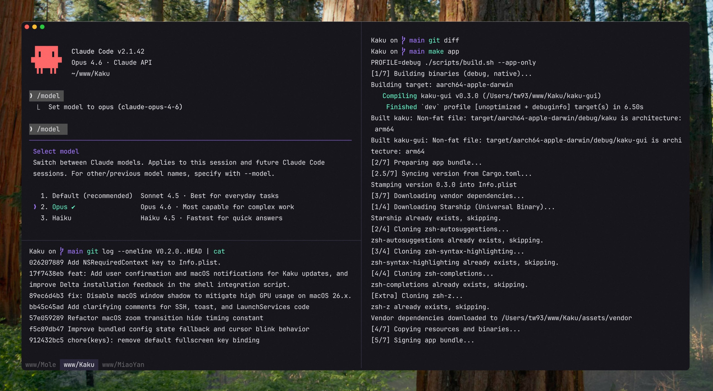

Built by a small team that used Alacritty, iTerm2, and Ghostty daily and wanted something between them. Fast like Alacritty, configurable like iTerm2, but readable, AI-aware, and polished on macOS out of the box. Rust core, Lua scripting, WezTerm-compatible config file.
One opinionated default instead of fifty knobs. If a setting only makes sense to 2% of users, it lives in Lua, not in the UI. Shell bootstrap cut to ~100ms. Binary 40% smaller. Chinese, Japanese, Korean glyphs render correctly on first boot because macOS system font rendering is on by default.

AI coding flipped the terminal from a place you type commands to a place you collaborate with a model. Existing terminals were still tuned for 2015 workflows: configs buried in TOML, bootstrap times that felt fine when humans were the only users, fonts that rendered Chinese as tofu. Kaku is the answer to what a terminal should feel like when half the commands come from an agent.
Forked WezTerm, cut the surface area in half, replaced the Lua defaults with a curated set that works on first boot. Polished the macOS integration: JetBrains Mono baked in, theme-aware dark/light, clickable paths, copy-on-select. Bundled a built-in AI assistant that can take natural-language commands and fix its own errors.
4.2k stars · 216 forks · 1,082 commits. Binary 40% smaller, resources 20% lighter, shell bootstrap from ~200ms to ~100ms versus upstream. The "Talk to it, it configures itself" use-case replaced dotfiles for most users.
Cmd+D splits vertically, Cmd+Shift+D horizontally. Cmd+Shift+Enter zooms the active pane. Pane input broadcast via Cmd+Opt+I (current tab) or Cmd+Shift+I (all tabs). Navigate with Cmd+Opt+Arrows. Smart Cmd+W: closes pane if multiple panes, closes tab if multiple tabs, otherwise hides the app.
Cmd+Shift+G launches lazygit in the current pane. Cmd+Shift+Y launches yazi; the y shell wrapper syncs the working directory on exit. Cmd+Shift+R mounts the current SSH session's remote filesystem via sshfs and opens it in yazi — no manual mount commands.
zsh-autosuggestions, zsh-syntax-highlighting, zsh-completions, and z load automatically inside Kaku sessions. Starship, Delta, and Yazi install via kaku init. Config file at ~/.config/kaku/kaku.lua — open with kaku config or Cmd+,. Add keybindings by inserting into config.keys, never replacing it.
# prefix.When a command exits non-zero, Kaku Assistant automatically sends the failed command, exit code, working directory, and git branch to the LLM, and displays a suggested fix inline. Press Cmd+Shift+E to paste the suggestion — dangerous commands (rm -rf, git reset --hard) are pasted but never auto-executed.
Type # list files modified in the last 7 days and press Enter. Kaku intercepts the line before the shell sees it, sends the query with current directory and git branch context, and injects the resulting command into the prompt ready to review and run. Works in both zsh and fish.
Configured via kaku ai or ~/.config/kaku/assistant.toml. Supports any OpenAI-compatible base URL — self-hosted models, DeepSeek, or corporate API gateways via custom_headers. Does not trigger on Ctrl+C exits, help flags, or non-shell foreground processes.